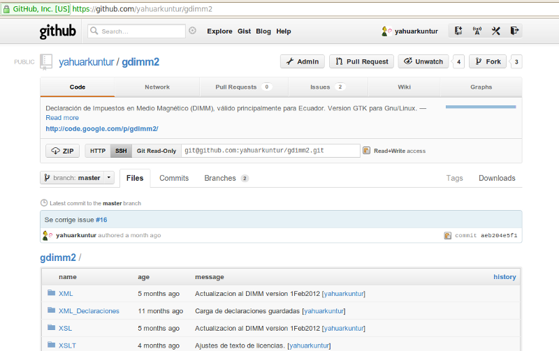
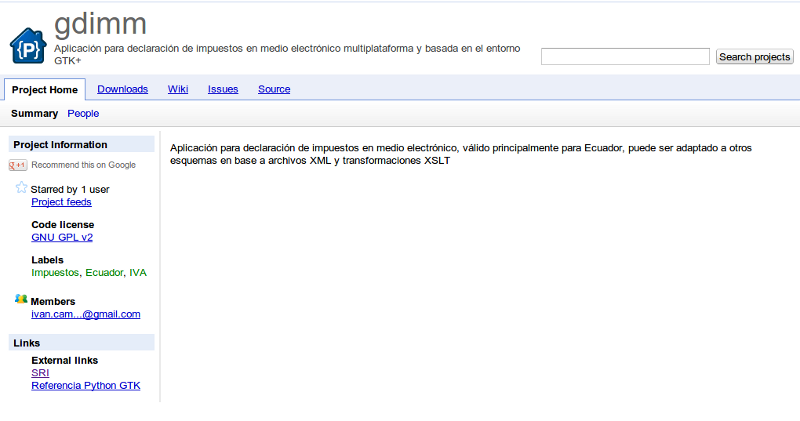
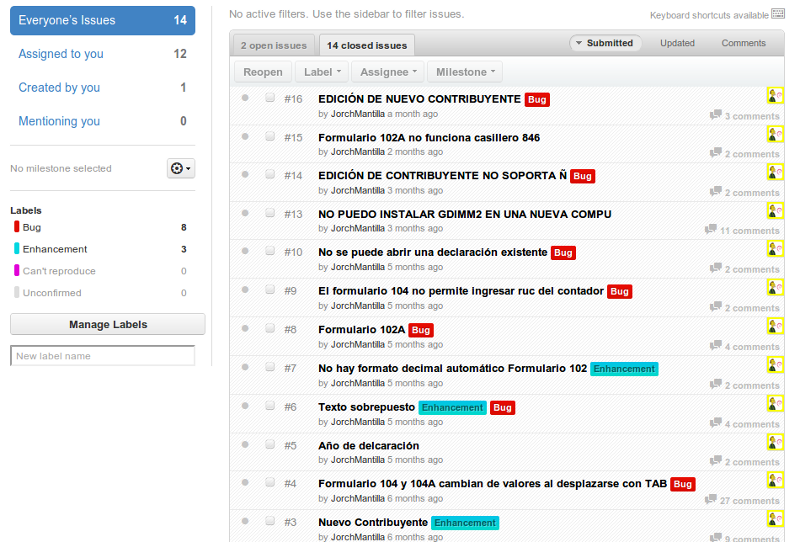
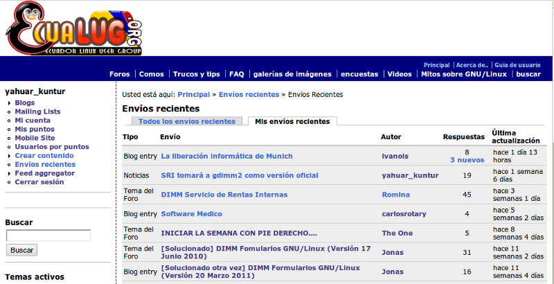
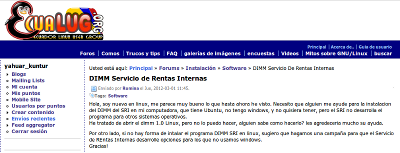

IV Seminario Internacional de Software Libre
para la Gestión del Conocimiento
Universidad Estatal de Bolívar
Julio 2012
Jorge Mantilla
@JorchMantilla
Ingeniero en Alimentos
https://github.com/JorchMantilla
Brian Debuire
@yahuarkuntur
Desarrollador PHP, Python
https://github.com/yahuarkuntur
El Servicio de Rentas Internas ha puesto a su disposición el programa DIMM (Declaración de Información en Medio Magnético), con la finalidad de facilitar la elaboración de declaraciones, cumpliendo con especificaciones técnicas, fórmulas de cálculo y validación para ser enviados por el medio Internet.
DIMM - Manual de Usuario
Los objetivos del
DIMM son:
- Facilitar la elaboración de las declaraciones en medio magnético, siguiendo las normas vigentes para cada tipo de impuesto.
- Evitar que incurra en errores de declaración o cálculo.
- Agilizar la captura de datos, pues permite llenar todo el formulario en una sola pantalla.
- Facilitar la impresión de todos los formularios elaborados.
DIMM - Manual de Usuario
"La necesidad es la madre de la invención."
Platón
gdimm2 - DIMM versión GTK para Gnu/Linux

https://github.com/yahuarkuntur/gdimm2
Original de Iván Campaña!

~ 2007
Python?
- ...es potente... y rápido
- ...se integra bien con el resto
- ...multiplataforma
- ...es amigable... y fácil de aprender
- ...es Abierto!
www.python.org
Se han corregido muchas cosas... Gracias Jorch!!!

Muy buena acogida... EcuaLUG

Desde EcuaLUG nace la propuesta para considerar a gdimm2 como alternativa al DIMM para Gnu/Linux.

http://www.ecualug.org/2012/03/01/forums/dimm_servicio_de_rentas_internas
Que viene ahora?
- Versión oficial del SRI
- Paquetes para distros pricipales (.deb, .rpm)
- Única versión (Windows, Gnu/Linux, Mac)